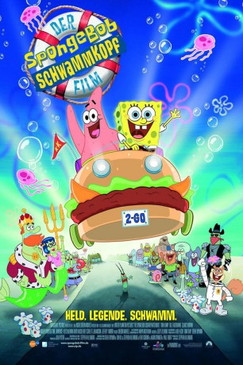

#2168 SpongeBob Schwammkopf - Der Film
Alternativ: The SpongeBob SquarePants Movie
 
 IMDB-Wertung: 7.0 / 10
IMDB-Wertung: 7.0 / 10  Metascore: 66
Metascore: 66 
Hektik in Bikini Bottom, dem Wohnort des gelben Schwamms Spongebob Schwammkopf. Irgendjemand hat die Krone von König Neptun gestohlen und der Verdacht fällt sofort auf Spongbobs Chef Mr. Krabs. Nur Spongebob und sein bester Freund, der Seestern Patrick, glauben an Mr. Krabs und machen sich auf, um dessen Unschuld zu beweisen. Dafür müssen sie Bikini Bottom verlassen und sich nach Shell City durchschlagen. Doch auf dem Weg dorthin kommen sie in allerlei schwierige Situation, die überstanden werden wollen, um Mr. Krabs zu retten.
Jahr: 2004
Dauer: 87 Minuten
FSK: 6
Land: USA Studio: Paramount PicturesTonspuren: DD5.1 - ,
Untertitel: Deutsch,
Auflösung: 1080p (1920x1080) Größe: 5099 MB
Genre: Animation/Trick, Abenteuer, Komödie, Familie
Regisseur: Stephen Hillenburg, Mark Osborne
Drehbuch: Stephen Hillenburg, Stephen Hillenburg, Derek Drymon, Tim Hill, Stephen Hillenburg
Soundtrack: Steve Belfer, Gregor Narholz
Darsteller:
 Tom Kenny als SpongeBob / Narrator / Gary / Clay / Tough Fish #2 / Twin #2 / Houston Voice
Tom Kenny als SpongeBob / Narrator / Gary / Clay / Tough Fish #2 / Twin #2 / Houston Voice Clancy Brown als Mr. Krabs
Clancy Brown als Mr. Krabs Rodger Bumpass als Squidward / Fish #4
Rodger Bumpass als Squidward / Fish #4 Bill Fagerbakke als Patrick Star / Fish #2 / Chum Customer / Local Fish
Bill Fagerbakke als Patrick Star / Fish #2 / Chum Customer / Local Fish Mr. Lawrence als Plankton / Fish #7 / Attendant #2, Lloyd
Mr. Lawrence als Plankton / Fish #7 / Attendant #2, Lloyd Jill Talley als Karen, The Computer Wife / Old Lady
Jill Talley als Karen, The Computer Wife / Old Lady Carolyn Lawrence als Sandy
Carolyn Lawrence als Sandy Mary Jo Catlett als Mrs. Poppy Puff
Mary Jo Catlett als Mrs. Poppy Puff Jeffrey Tambor als King Neptune
Jeffrey Tambor als King Neptune Scarlett Johansson als Mindy
Scarlett Johansson als Mindy Alec Baldwin als Dennis
Alec Baldwin als Dennis David Hasselhoff als David Hasselhoff
David Hasselhoff als David Hasselhoff Cole S. McKay als Scruffy the Pirate
Cole S. McKay als Scruffy the Pirate- Bart McCarthy als Captain Bart the Pirate
- Paul Zies als Upper Deck the Pirate
- Gerard Griesbaum als Fingers the Pirate
 Aaron Hendry als Tangles the Pirate / Cyclops Diver
Aaron Hendry als Tangles the Pirate / Cyclops Diver- Gino Montesinos als Tango the Pirate
- David Stifel als Cookie the Pirate
- Alex Baker als Martin the Pirate
- Tommy Schooler als Salty the Pirate
- Ben Wilson als Stovepipe the Pirate
 Mageina Tovah als Usher
Mageina Tovah als Usher- Todd Duffey als Concession Guy
 Dee Bradley Baker als Man Cop / Phil / Perch Perkins / Waiter / Attendant #1 / Thug #1 / Coughing Fish / Twin #1 / Frog Fish Monster / Freed Fish / Sandals
Dee Bradley Baker als Man Cop / Phil / Perch Perkins / Waiter / Attendant #1 / Thug #1 / Coughing Fish / Twin #1 / Frog Fish Monster / Freed Fish / Sandals Sirena Irwin als Reporter / Driver / Ice Cream Lady
Sirena Irwin als Reporter / Driver / Ice Cream Lady Lori Alan als Pearl
Lori Alan als Pearl Thomas F. Wilson als Fish #3 / Tough Fish #1, Victor
Thomas F. Wilson als Fish #3 / Tough Fish #1, Victor Carlos Alazraqui als Squire / Goofy Goober Announcer / Thief
Carlos Alazraqui als Squire / Goofy Goober Announcer / Thief Neil Ross als Cyclops
Neil Ross als Cyclops Stephen Hillenburg als Parrot
Stephen Hillenburg als Parrot Mike Bell als Fisherman
Mike Bell als Fisherman- Kristopher Logan als Squinty the Pirate
- D.P. FitzGerald als Bonesy the Pirate
- Dylan Haggerty als Stitches the Pirate
 Henry Kingi als Inky the Pirate
Henry Kingi als Inky the Pirate- Randolph Jones als Tiny the Pirate
- Maxie Santillan Jr. als Gummy the Pirate
- Peter DeYoung als Leatherbeard the Pirate
- John Siciliano als Pokey the Pirate
- Robin Russell als Sniffy the Pirate
- Jose Zelaya als Dooby the Pirate
- Chris Cummins als Concession Guy
- Joshua Seth als Prisoner
 Tim Blaney als Singing Goofy Goober
Tim Blaney als Singing Goofy Goober- Derek Drymon als The Screamer / Fisherman
- Aaron Springer als Laughing Bubble
Datei: X:\Kinder Collections\SpongeBob Schwammkopf\SpongeBob Schwammkopf - Der Film (2004, FSK6, 1920x1080).mkv seit 19.10.2015
Festplatte: Kinder-Filme+Trick
 Es gibt insgesamt 23 Filme in der Gruppe 'Kinder Collections\SpongeBob Schwammkopf'
Es gibt insgesamt 23 Filme in der Gruppe 'Kinder Collections\SpongeBob Schwammkopf'